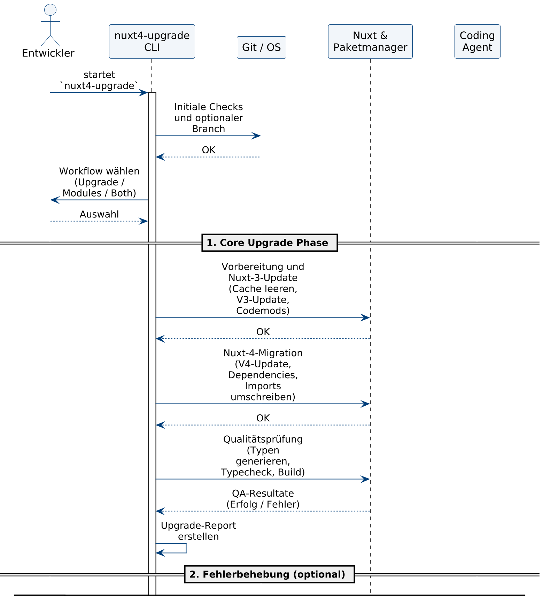
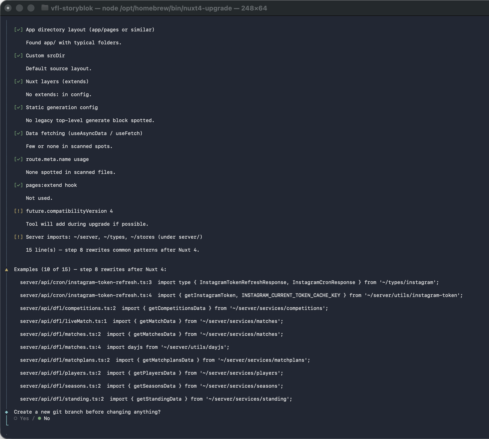
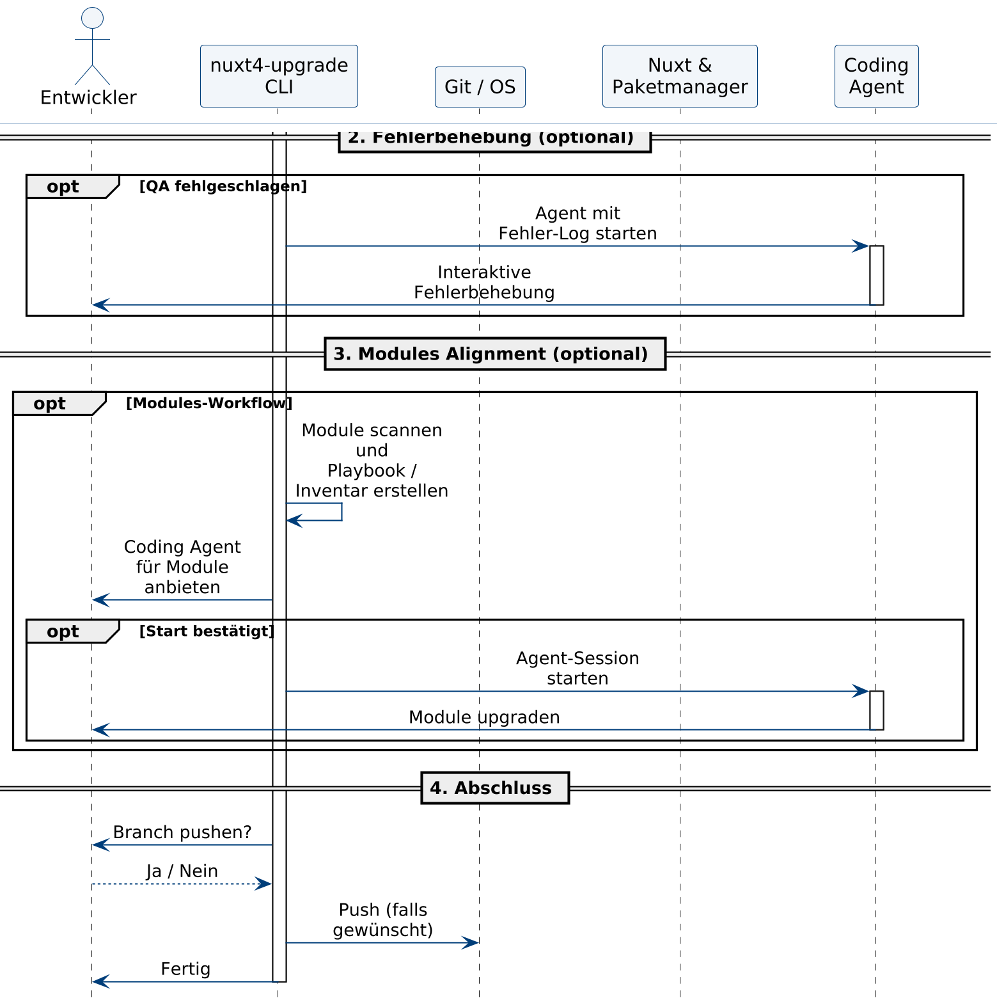

Abschlussprüfung Sommer 2026
Sören Tiemann
Fachinformatiker für Anwendungsentwicklung
basecom GmbH & Co. KG
Über mich
Sören Tiemann
basecom
Interne Tool-Entwicklung für das Development-Team — ausgelegt für laufende Kundenprojekte
Anlass: Nuxt 4 veröffentlicht; Support für Nuxt 3 endet zum 31.07.2026
Kernfrage: Wie lassen sich wiederkehrende Migrationsaufgaben optimieren, um Zeitaufwand und Doppelarbeit zu reduzieren?
Wiederkehrende Aufgaben bündeln — Zeit sparen, Kontrolle beim Entwickler
nuxt4-upgrade — geführter Migrationsprozess| Vorgang | Zeit | Satz | Kosten |
|---|---|---|---|
| Entwicklung CLI-Werkzeug | 80 h | 110 € | 8.800 € |
| Betreuung, Abstimmung, Abnahme | 5,5 h | 170 € | 935 € |
| Gesamtkosten | 9.735 € | ||
| Position | Wert |
|---|---|
| Manuelle Migration (inkl. Modulprüfung & Validierung) | 8 h |
| Mit CLI-Werkzeug (geschätzt) | ca. 5 h |
| Einsparung pro Migration | 3 h × 170 € = 510 € |
Amortisation: 9.735 € ÷ 510 € = 19,09 → ab der 20. Migration
Make-or-Buy: Eigenentwicklung — keine Standardlösung deckt Nuxt-Kern, Modul-Inventar und flexible Agenten-Orchestrierung ab
Erweitertes Wasserfallmodell — klare Phasen mit iterativer Feinjustierung an realen Testprojekten
@clack/prompts) | Feste KI-API → flexible Agenten-Erkennung| Phase | Stunden | Inhalt (Kurz) |
|---|---|---|
| Analyse | 8 h | Anforderungen, Make-or-Buy, Ist-Prozess |
| Entwurf | 12 h | Architektur, Workflows, Schnittstellen |
| Implementierung | 35 h | CLI, Module, Agenten, Validierung |
| Test & Abnahme | 7 h | Testläufe, Abnahme mit Betreuer |
| Dokumentation | 10 h | Projektdokumentation und Anleitung |
| Risikopuffer | 8 h | Unvorhergesehenes, z. B. Agenten-Pivot |
| Gesamt | 80 h |
Modularer Aufbau — offizielle Nuxt-Tools bleiben die technische Basis
@clack/promptsnuxi upgrade, Typecheck, Build) werden orchestriert, nicht ersetzt
Umsetzung: Interaktive CLI mit kontextsensitiver Projektanalyse
package.json, Nuxt-Abhängigkeit, Package-Managerfuture.compatibilityVersion = 4 wo sinnvoll
Umsetzung: Strukturierter Modul-Workflow mit optionalem Agenten-Support

Nachvollziehbarkeit als zentrales Qualitätsziel — jeder Lauf hinterlässt überprüfbare Spuren
Abnahme durch Projektbetreuer nach Testläufen an realitätsnahen Nuxt-3-Repositories
| Bereich | Soll-Ist |
|---|---|
| CLI-Werkzeug zur Nuxt-Migration | erreicht |
| Interaktive Benutzerführung | erreicht |
| Modul-Workflow mit Inventar | erreicht |
| Artefakterzeugung & Validierung | erreicht |
| Agenten-Anbindung (flexibel statt fester API) | angepasst & erreicht |
| Keine unkontrollierte Vollautomatisierung | planungskonform |
Reflexion: Ergebnisse, Erkenntnisse und weiterer Ausblick
Ich freue mich auf Ihre Fragen im Fachgespräch.
Sören Tiemann
basecom GmbH & Co. KG · Sommer 2026